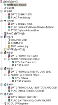
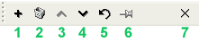

|
Comme nous l'avons vu dans la section relative au format
Gedcom,
une entité consiste en un empilement de propriétés,
arrangées selon une hiérarchie, et auxquelles on
associe une valeur pour chacune d'elles. |
 |
Explorez cette arborescence de propriétés en utilisant si besoin est les ascenseurs à droite et en bas. Vous pourrez vous déplacer dans cette succession de propriétés en ouvrant et fermant les sous-répertoires et en choisissant chacune des propriétés. Une fois sélectionnée, la propriété est également affichée dans la partie basse de la fenêtre - c'est à cet endroit qu'il vous est possible de l'éditer, et donc de la modifier.
Une remarque : Pour des propriétés particulières, on trouve un certain nombre d'éditeurs prédéfinies. La plupart des propriétés tiennent en effet sur une seule ligne, mais parfois elles utilisent un format particulier. Par exemple le NOM (NAME) : son format est NAME first /last/ (prénom / nom de famille). Si vous sélectionnez la propriété NAME (NOM) un éditeur un peu spécial apparaîtra en bas de la fenêtre pour vous permettre de modifier les informations dans des champs appropriés. Si GenJ ne connait pas un éditeur qui peut correspondre à la propriété sélectionnée ou aux données contenues dans cette propriété (ex. une mauvaise date) vous pourrez quand même changer cette valeur avec l'éditeur par défaut.
Quelques propriétés contiennent des références à d'autres entités (exemples : HUSB (mari), apporte une référence à la famille du mari, et FAMS (famille que l'on forme entre deux conjoints) fait référence à la famille d'un conjoint). Double cliquez sur un tel noeud, et l'entité sur laquelle vous êtes, va basculer sur cette cible.
Le bouton "+" sur la barre d'outils (voir ci-aprés) vous permet
d'ajouter de nouvelles propriétés. En cliquant dessus,
une nouvelle propriété et ses sous-propriétés
associées seront ajoutées.
Une boite de dialogue vous donnera une liste des
sous-propriétés liées à cette
propriété que vous voulez ajouter. Ces
sous-propriétés sont celles autorisées par le
format Gedcom. Vous pouvez en choisir une ou plusieurs selon vos
besoins. GenJ vous offre la possibilité d'ajouter des
sous-propriétés de votre propre cru - il vous suffit
d'utiliser la partie basse de l'éditeur pour le faire, mais
il faut que vous ayez conscience de deux choses : d'une part il faut
faire commencer le nom de cette sous-propriété, de ce
nouveau label, par un signe "_", comme par exemple "_URL", et d'autre
part il vraiment que vous utilisiez cette possibilité avec le
plus de parcimonie possible - Evitez au maximum de créer
ces nouveaux labels, car le jour ou vous voudrez échanger vos
fichiers Gedcom, ils ne répondront plus à la norme, et
vous perdrez plein d'informations.
N'oubliez pas les possibilités que vous offre le Menu Contextuel pour effectuer des actions complexes sur les propriétés et les entités également. Essayez un clic droit sur l'un des noeuds qui est affiché, et découvrez ce que vous pouvez faire.
